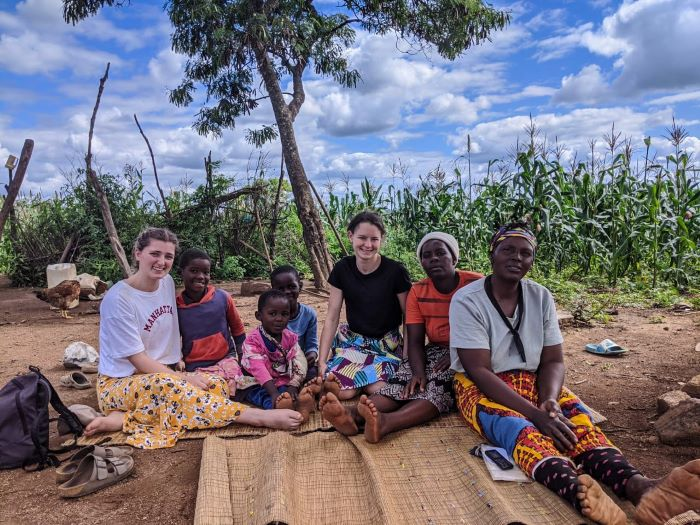

|
There are countless organizations that offer volunteer travel opportunities across Africa, each with a unique focus and mission. These organizations provide a wide range of programs designed to allow volunteers to make a meaningful impact while exploring the continent's incredible diversity and rich cultural heritage. Whether you are interested in working with vulnerable communities, protecting wildlife, teaching, or contributing to health and education initiatives, there is no shortage of ways to get involved.
With so many options available, volunteers can find organizations that align with their personal interests and skills. These organizations run programs in over 50 countries across Africa, covering everything from wildlife conservation and environmental sustainability to humanitarian aid, women’s empowerment, and community development. Each program is designed to give volunteers an immersive experience, allowing them to work closely with local communities, gain a deeper understanding of African cultures, and contribute to important social causes.
The variety of opportunities makes it possible for individuals, families, or groups to find a program that suits their needs, whether they are looking for a short-term adventure or a long-term commitment. With the vast number of organizations to choose from, volunteers can select a program that resonates with their values and provides the kind of hands-on experience that will make a real difference.
By volunteering with one of these organizations, participants not only contribute to the communities they serve but also gain valuable skills, forge lasting connections, and create memories that will stay with them for a lifetime. Volunteering in Africa offers a chance to step outside the traditional tourist experience, engage with local cultures, and support vital projects that are helping to shape the future of the continent. Whether working on health programs, teaching, or supporting conservation efforts, volunteers have the opportunity to be part of something truly meaningful while exploring the stunning landscapes and diverse people of Africa.
|

|